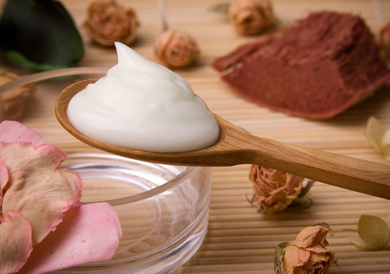

Handmade cream-mask for face
There's clean skincare, and then there's skincare so clean it only contains ingredients found in your kitchen cabinets. But when you're feeling the itch to make a DIY mask, there are some ingredients that are safer and more effective than others. So we turned to Cecilia Wong, a N.Y.C.-based celebrity facialist as well as the founder of non-invasive skincare salon and natural skincare line Cecilia Wong Skincare, to share easy mask recipes you can make using wholesome ingredients. Whether you’re picky about what goes on your skin or you simply need a mask on the fly, there’s a homemade option you can whip up faster than your breakfast. If you do not want to make the cream yourself, you can order it from us. Click on the "Order" button
To order